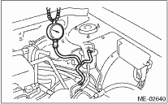
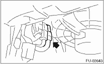

CAUTION:
Before removing the fuel pressure gauge, release the fuel pressure.
NOTE:
If the fuel pressure is out of specification, check or replace the pressure regulator and pressure regulator vacuum hose.
1. Release the fuel pressure.

2. Open the fuel filler flap lid, and remove the fuel filler cap.
3. Disconnect the fuel delivery hose from the fuel filter, and connect a fuel pressure gauge.

4. Connect the fuel pump relay.

5. Start the engine.
6. After warm-up, disconnect the pressure regulator vacuum hose from the intake manifold, and measure fuel pressure.
Fuel pressure:
Standard: 284 — 314 kPa (2.9 — 3.2 kgf/cm2, 41 — 46 psi)
7. After connecting the pressure regulator vacuum hose, measure the fuel pressure.
Fuel pressure:
Standard: 206 — 235 kPa (2.1 — 2.4 kgf/cm2, 30 — 34 psi)
NOTE:
The fuel pressure gauge registers 10 to 20 kPa (0.1 to 0.2 kgf/cm2, 1 to 3 psi) higher than standard values during high-altitude operations.